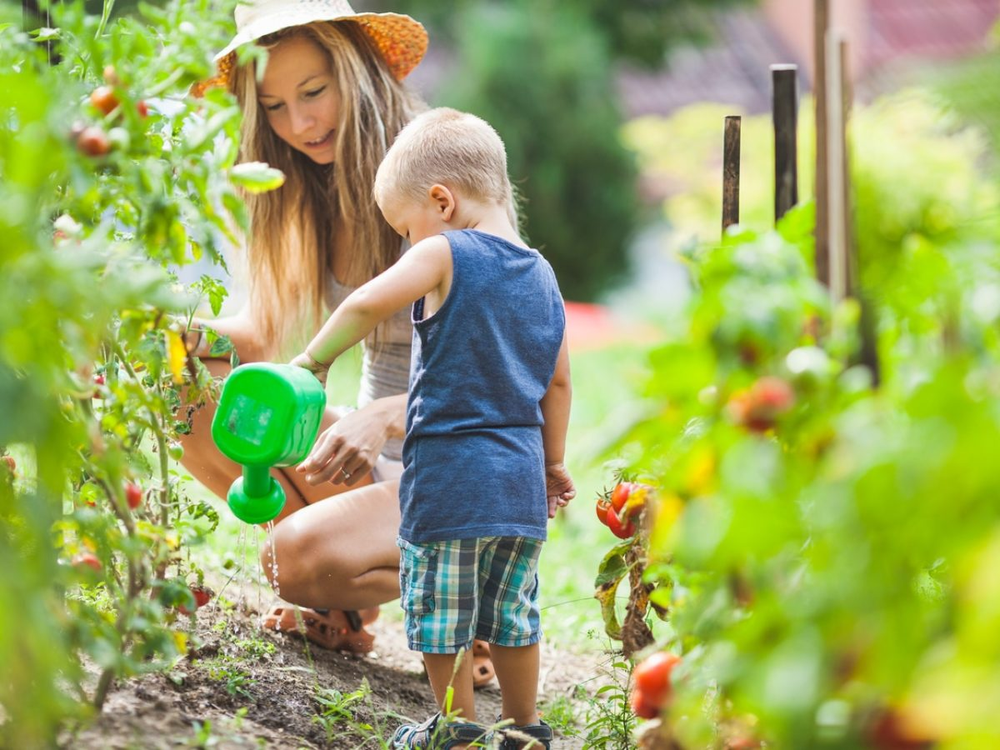

Prendre un enfant par la main
Quelle importance aurait la vie, si ce n’est au final pour transmettre nos savoirs aux futures générations?
Dans leur quotidien, les enfants qui vivent en ville n’ont que très peu de contact avec la nature. Pourtant les activités au jardin sont un outil extraordinaire pour appréhender la nature, découvrir la faune et la flore de nos prairies, comprendre les besoins des plantes, le rôle important de l’eau, du soleil …. et la manière de combiner tout cela pour créer la vie au jardin.
C’est dans cette optique que la zone pédagogique a été spécialement aménagée afin de proposer aux enfants des ateliers éducatifs aussi intéressants que possible.
Une serre donnera aux enfants un endroit chaud et couvert afin de commencer les premiers travaux de saison et apprentissages du jardin . La découverte des outils, des graines, les besoins des plantes (eau, soleil, substrat …), les premiers semis et le premier miracle de la vie d’une plante : la germination.
Une zone potagère leurs permettra de travailler la terre, de planter leurs semis, de voir leurs plantes grandir et finalement de récolter le fruit de leur travail. Quelle magnifique responsabilité !
Un pré fleuri grouillant de vie et non cultivé sera le moyen de côtoyer la faune si importante au jardin, de voir la nature suivre son cours sans intervention humaine.
Tout au long de ces ateliers, l’accent sera porté sur le respect de l'écologie et l’importance de la nature, de la terre et de l’eau. La mare et les zones de compostage seront également étudiées afin de souligner l’impact du recyclage et de la gestion des déchets.

Ateliers permaculture
Vous désirez aménager un jardin potager chez vous, mais ne savez pas comment faire ? Vous êtes simplement désireux d’apprendre les bases d’un jardin potager naturel ? Contactez-nous afin que nous planifions ensemble des séances d’apprentissage à la permaculture.
Nous pourrons ensemble aborder les points cruciaux d’un jardin en total accord avec la nature :
- l’importance d’un sol vivant (vers de terre, micro-organismes, matière organique …) et l’importance d’un travail du sol très limité afin de ne pas perturber son équilibre.
- Les associations de cultures et la rotation des cultures sur une même parcelle.
- Le fonctionnement en circuit fermé : pas de déchets générés, pas ou peu d’apports extérieurs, choisir des graines et semences traditionnelles pouvant être ressemées, récoltées et stocker ses propres graines, le recyclage des déchets verts …
- Optimiser l'utilisation de l’eau : récupération de l’eau de pluie, les périodes d’arrosage, la protection du sol ..
- Optimisation des surfaces : les cultures en hauteurs, les cultures étagées, les rotations de cultures …
- Les animaux domestiques au jardin : poules, chèvres, lapins ...